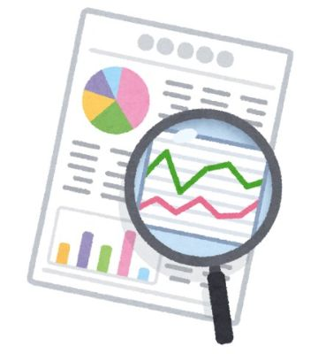

企画・マネジメント
シンクタンク研究員
社会や経済、技術の動向を調べて、国や企業に提言する仕事。データと専門知識で課題を解きます。

主な仕事
- 調査・データ分析
- 報告書や提言のまとめ
- 官公庁・企業への説明
こんな人に向いている
- 社会の動きやニュースに関心がある人
- データを集めて分析するのが好きな人
- 調べたことを文章にまとめるのが得意な人
近いタイプ
就活16タイプ診断で、この職種に近いタイプです。
関係の深い学び
- 数学・統計
- 情報
- 建築・土木
- 分野を問わない
学科が違っても目指せる職種がほとんどです。あくまで目安にしてください。
この職種がある企業の例
- 野村総合研究所
- 三菱総合研究所
- 日本総合研究所
採用の有無や学校推薦の枠は年度によって変わります。就職課の求人票や各社の採用ページで確認してください。
企画・マネジメントのほかの職種
- プロジェクトマネージャー・プロダクトマネージャーチームをまとめて、プロジェクトや製品をゴールまで導く仕事。計画・人・お金を見ながら進めます。
- 新規事業・事業開発世の中の課題を見つけて、新しいサービスや事業を立ち上げる仕事。ベンチャーや起業もこの道です。
- メーカーの総合職メーカーで、営業・企画・調達・人事など会社を動かす仕事を、部署を変えながら幅広く経験する働き方。理系の知識は製品を理解するのに役立ちます。
自分に近いタイプが分からない人は、診断してみましょう。20問・約3分です。
就活16タイプ診断へ